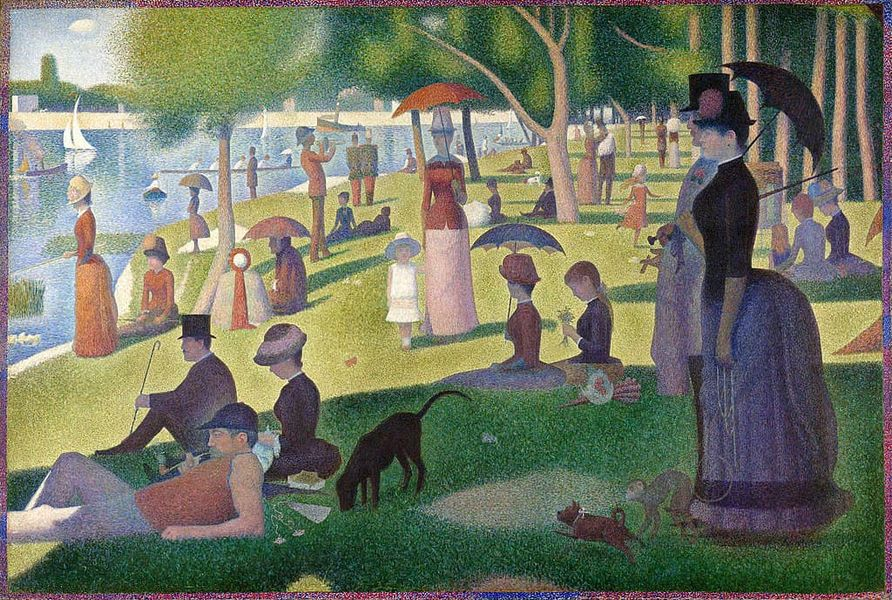

Mobile uploads
I have been given a great gift.
The gift is you.
I have a vast circle of friends. I have friends from backgrounds some of you hate and some of you ignore.
BUT what I can tell you is: the larger my circle of friends become the more I see the true picture.
A Sunday Afternoon on the Island of La Grande Jatte is a painting by Georges Seurat. He painted it using a technique called pointillism. It’s nothing more than dots.
That’s all we are. Just a dot. But when we step back and see all the dots the picture becomes clear. It’s beautiful. It’s in motion. And it’s still being painted.
Everything is happening just the way it’s meant to happen. And it is going to be the most beautiful thing you’ve ever seen.